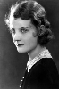
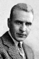

Country:United States, 74 minutes
Spoken languages:
Genres:Horror, Drama, Fantasy
Director(s):Karl Freund, Tod Browning
Writer(s):Tod Browning, Bram Stoker, Louis Bromfield, Garrett Fort, Louis Stevens
Video Codec:Unknown
Number: 1698


Certification:
Storyline:
British estate agent Renfield travels to Transylvania to meet with the mysterious Count Dracula, who is interested in leasing a castle in London and is, unbeknownst to Renfield, a vampire. After Dracula enslaves Renfield and drives him to insanity, the pair sail to London together, and as Dracula begins preying on London socialites, the two become the subject of study for a supernaturalist professor, Abraham Van Helsing.
Cast:  


Medium: Original DVD,
Comments: Part of: Dracula - The Legacy Collection
Loaned: No
Aspect ratio: Unknown